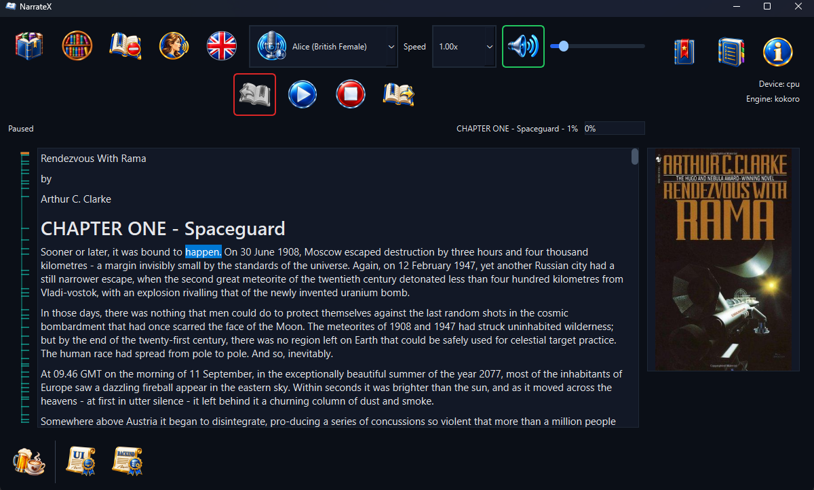
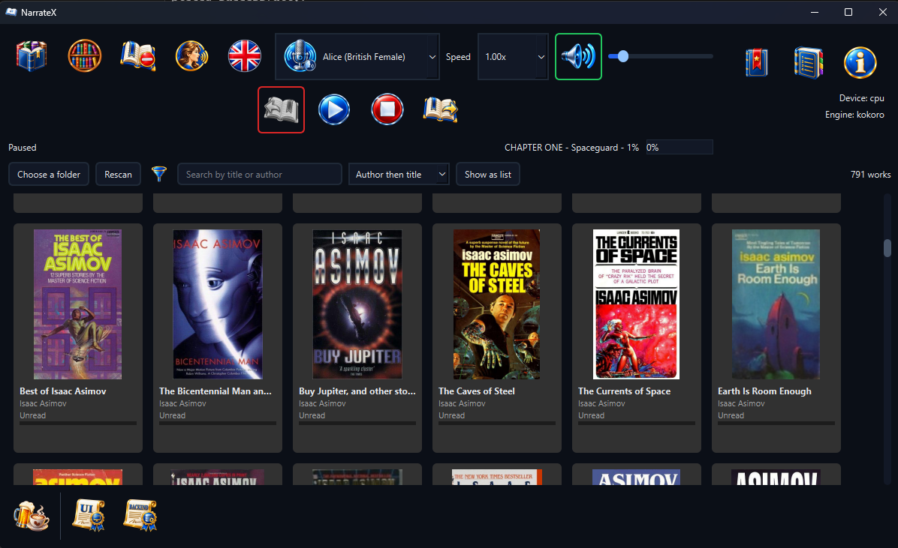
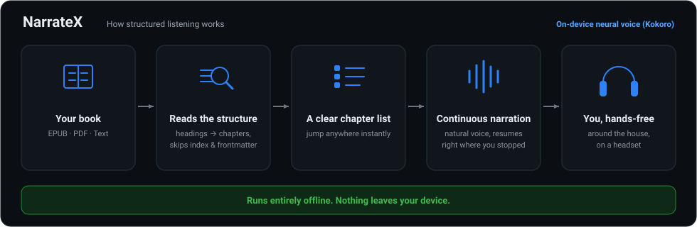

NarrateX is for listening to what you would otherwise have to sit and read. Use it at your computer on any desktop operating system or send it to a wireless headset and keep listening, hands-free, while you move around the house and get on with everything else.

Point NarrateX at the folders holding your books and it lays them out as a grid of covers. A list is one click away, showing the title, author, genres and how far through each one you are. One click opens a book. A title you hold in two formats appears once and opens in whichever is quicker to read.
Narrow the shelf by genre, search it by title or author and order it by author, by title or by what you read most recently. Books that say nothing about their subject can be filed by hand, several at once; what you say outranks what the file says. The shelf reads your books where they sit: it never moves, renames or edits a file and never looks anything up online.


A textbook, a standard, an academic PDF, a long piece of non-fiction. These are the documents where structure is the whole problem: the reading has to start at chapter one rather than the copyright page, skip the index and the list of figures, then come back tomorrow at the sentence it stopped on rather than somewhere near it. The longer the document, the more each of those costs. A tool that reads a five-page article aloud perfectly well can be unusable at six hundred pages for exactly these reasons.
That is what NarrateX is built around; it is why the structure is read before a word is spoken.
The voices run on your own machine: 28 English voices, British and American. Being on-device, they are not as natural as the large cloud services. If the single thing you want is the most lifelike voice available, one of those will beat this.
What you get in exchange: nothing about what you read ever leaves your computer, it works with no internet at all, there is no per-word cost, no usage cap and no account. For a book you intend to listen to over weeks, that is usually the better trade; it is stated here so you can decide before downloading rather than after.
Kindle formats (MOBI, AZW, AZW3, PRC and KFX) open too when Calibre is installed, which converts them for reading. The shelf reads a Kindle file's cover, title and author directly, without Calibre.
NarrateX is free and stays free. There is no paid tier, no licence key and no feature held back behind a donation. If it has replaced something you were paying for or simply saved you an afternoon, a contribution supports its maintenance and continued development. The same link sits at the foot of the app's own window.